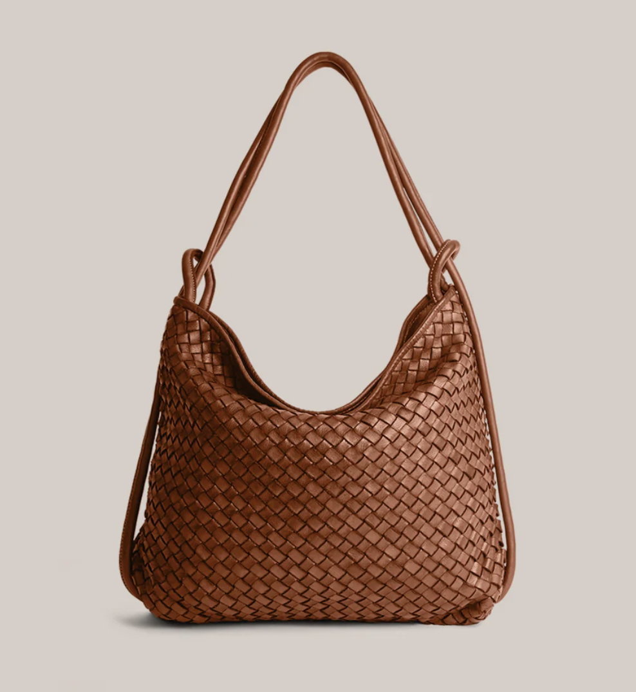

My current everyday bag has been this oversized brown leather tote from Marta Ponti. It fits everything I could possibly need for work, school, etc. and has organizational pockets and a zipper closure for anytime I'm somewhere less than ideal. And if I need a smaller purse, I typically reach for my brown studded bag from Franco Sarto, or my black Guess mini.